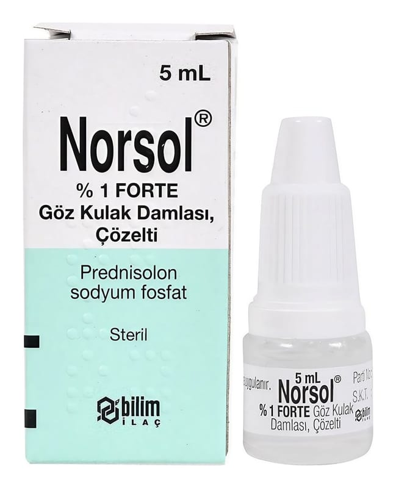

Norsol % 1 Forte Göz Kulak Damlası, Çözelti, 5 ml

Ne için kullanılır
KT · Bölüm 1NORSOL kapaklı, kendinden damlalıklı şeffaf şişe içerisinde bulunan bir solüsyondur.
NORSOL kortikosteroidler adı verilen ilaç grubuna dahildir ve etkin madde olarak %1 oranında prednizolon sodyum fosfat içerir.
NORSOL inflamasyonu (kızarıklık, kaşıntı ve ağrı) azaltarak etki gösterir.
NORSOL virüs, bakteri ve mantar enfeksiyonları ile ilişkili olmayan ve kortikosteroidlere yanıt veren gözün iltihabi durumlarının ve dış kulak yolunda enfeksiyon ile ilgili olmayan iltihabi durumların kısa süreli tedavisinde kullanılır.